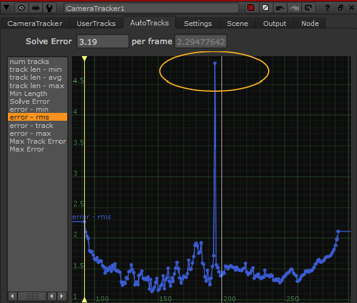
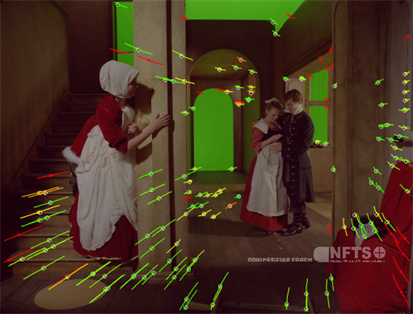
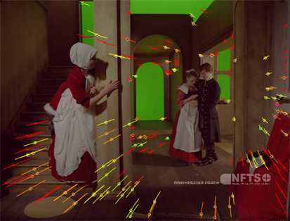

CameraTracker 有几个故障排除工作流程可用于提高解决精度，但最终，良好的解决方案依赖于良好的跟踪数据。
您可以使用阈值控制 自动跟踪 标签动态拒绝轨道，并删除它们，以提高精度。使用 错误-rms 曲线为例:
| 1。 | 单击 自动跟踪 选项卡中的属性，并选择 错误-rms 曲线。 |
提示: 新闻 F 在曲线显示中，将选定的轨迹调整到可用的屏幕空间。

在这个例子中，你可以看到误差曲线在 195 帧周围显著增加。
| 2. | 将查看器播放头移动到受影响的区域，并检查查看器中的跟踪特征。 |
| 3. | 如果你减少 最大轨迹错误 在 “属性” 面板中，您将开始看到轨道在低于阈值时变成红色。 |
|
 |
 |
| 最大轨迹错误 设置为 6。 | 最大轨迹错误 设置为 2。 |
| 4. | 单击 删除已拒绝 删除低于指定阈值的所有轨迹。 |
提示: 您还可以手动删除轨迹，方法是在查看器中选择轨迹，单击鼠标右键，然后选择 轨道 > 删除选定的 .
| 5. | 然后，可以通过单击来解决受影响的帧范围 更新解决方案 . |
| 6. | 进一步提高解决使用 设置 标签 求解 控制: |
• 相机运动 -设置 CameraTracker 在求解计算期间应该考虑的相机移动。
• 关键帧分离 -调整关键帧之间的分离值。
高分离值生成的关键帧较少且传播范围较大，通常用于较慢的相机运动。
低值产生更多的关键帧，具有更紧密的传播，通常用于快速的相机运动。
注意: 启用时, 参考框架 控件确定第一个关键帧的放置位置。
• 平滑度 -更高的值可以通过添加 “重量” 来消除路径，从而帮助平滑相机路径。
• 参考框架 -允许您指定更新相机解决方案的开始帧，以及确定第一个关键帧的位置。
注意: 检查 设置参考框架 启用此控件。
在 自动跟踪 选项卡，在 细化 部分，有三个细化控制来帮助改进您的解决方案。如果 错误 和 每帧 上的控件 摄影师 Tab 显示一个相对较高的值，尝试使用 inlier 轨迹来改进解决方案。像素由曲线阈值定义，可以细化焦距、相机位置或相机旋转 (或这些参数的组合)。您可以手动编辑摄像机首先解决的 输出 选项卡，然后选择:
• 焦 长度 -检查以细化相机的焦距。
• 位置 -检查以细化相机位置。
• 旋转 -检查以优化相机旋转。
最后，单击 精炼解决 .
|
|